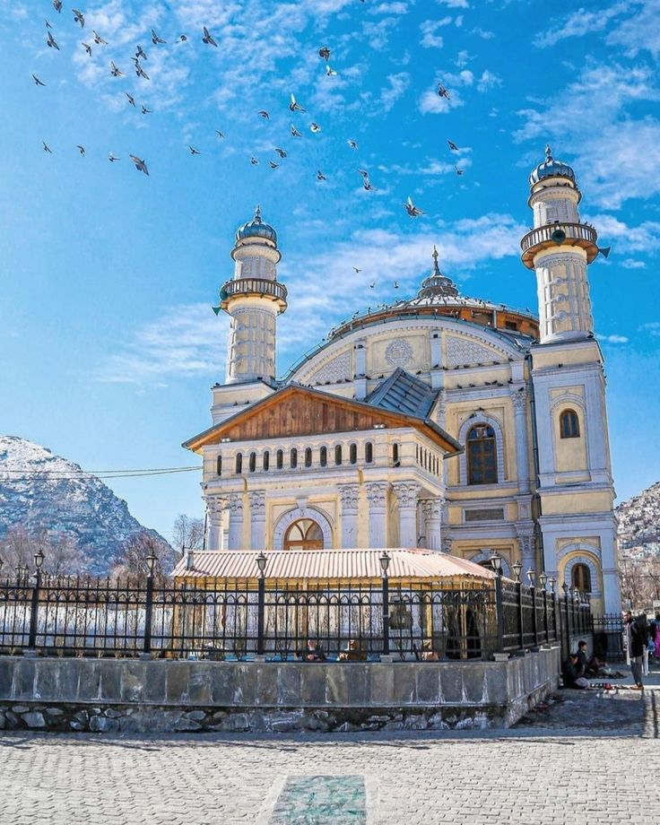

Discover the heart of Afghan heritage—one city at a time.
Afghanistan is a land of diverse traditions, poetic expressions, rich culinary tastes, and centuries-old craftsmanship. Each city—whether the blue-tiled Herat or the lively bazaars of Mazar—holds a treasure trove of stories. This website guides you through the essence of Afghan identity, city by city.